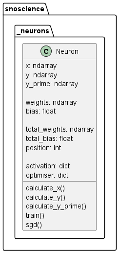
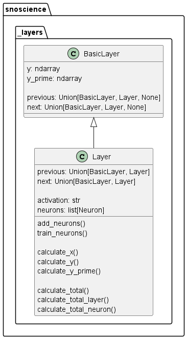
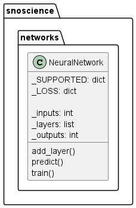

Methods
Classes
The primary functionalities of the NN are contained in the "Neuron", "Layer", and "NeuralNetwork" classes. For each of these classes the class diagram is given and each method is described in detail. This package uses NumPy arrays for all its calculations. This section starts with the setup of a NN, and all subsequent examples given in each section are based on this setup.
Setup
The network is set up as follows:
- 2 inputs (\(I\)) per sample, 2 samples in total.
- 2 neurons (\(N\)) in first hidden layer (\(H1\)).
- 3 neurons in second hidden layer (\(H2\)).
- 2 outputs (\(O\)) per sample, thus 2 neurons in output layer, and thus 2 losses (\(L\)).
- all neurons are initialised with weights and biases equal to \(\frac{1}{2}\) to simplify the calculations.
See the table below for naming conventions:
| Input | Hidden 1 | Hidden 2 | Output | Loss |
|---|---|---|---|---|
| \(I1\) | \(N11\) | \(N21\) | \(O1\) | \(L1\) |
| \(I2\) | \(N12\) | \(N22\) | \(O2\) | \(L2\) |
| \(N23\) |
The naming conventions for the neuron weights (\(W_N\)) and biases (\(B_N\)) are given below, with \(N22\) and \(O1\) as examples:
| \(N22\) | \(O1\) |
|---|---|
| \(W_{N22_1}\) | \(W_{O1_1}\) |
| \(W_{N22_2}\) | \(W_{O1_2}\) |
| \(B_{N22}\) | \(W_{O1_3}\) |
| \(B_{O1}\) |
The inputs and outputs of the samples are defined in the following matrices:
Neuron

Initialise
Each Neuron instance is initialised with a randomised weight vector and bias scalar with values between 0.00 and 0.01. The number of weights is determined by the number of neurons in the previous layer. It turns out that the learning rate used in SGD is correlated to these initialised values, and using the 0.01 factor leads to commonly used learning rates between 0.00 and 0.05.
Calculate X
This method calculates the input for the neuron (\(X_N\)). It is calculated with the following equation:
E.g. for \(N11\):
Calculate Y
This method calculates the output for the neuron (\(N\)). It depends on the activation function used, which is taken from the "_activation" module. For the sigmoid, it is calculated as follows:
E.g. for \(N11\):
Note that the naming convention for the neuron output is equal to the neuron itself. This is intentionally done to improve the readability of the total derivatives, which is further discussed in the layer section.
Calculate Y'
This method calculates the output derivative for the neuron (\(N'\)). It depends on the activation function used, which is taken from the "_activation module. For the sigmoid, the derivative is calculated as follows:
E.g. for \(N11\):
Train
This method trains the neuron based on the given optimiser. For SGD, the total derivative of the loss with respect to the neuron's weights (\(\frac{\delta{L}}{\delta{W_N}}\)) and its bias (\(\frac{\delta{L}}{\delta{B_N}}\)) need to be known. This is not a straightforward calculation, and is further discussed in the layer section. Once calculated, they are stored in the "total_weights" and "total_bias" attributes of the neuron, and the training can be done using the following equations, with \(l\) corresponding to the learning rate:
Layer

Initialise
After each Layer instance is initiated, a link must be made between it and its previous and next layers. This is done automatically when using the "add_layer" method in the NeuralNetwork class. The link enables the feed forward and back propagation properties of the NN.
Add neurons
This method adds neurons to the layer and assigns them a position, e.g. the 5th neuron added to the layer will have position 4, as counting starts at 0. This property is required when calculating the total derivatives.
Calculate X
This method calls the "calculate_x" method for each neuron in the layer.
Calculate Y
This method calls the "calculate_y" method for each neuron in the layer, and horizontally stacks the neuron output vectors as the layer output array. The stacking is done to prevent unnecessary recalculations when calculating the total derivatives. E.g. for \(H1\) consisting of \(N11\) and \(N12\):
Calculate Y'
This method calls the "calculate_y_prime" method for each neuron in the layer.
Train neurons
This method calls the "train" method for each neuron in the layer. For SGD, the "calculate_total" method is called beforehand, to calculate the total derivatives for each neuron in the layer.
Calculate total derivatives
As described in the train section, \(\frac{\delta{L}}{\delta{W_N}}\) and \(\frac{\delta{L}}{\delta{B_N}}\) are required to implement SGD as an optimiser. These can be subdivided in the total derivative for the neuron \(\frac{\delta{L}}{\delta{N}}\), its weights \(\frac{\delta{L}}{\delta{W_N}}\), both of which are vectors, and its bias \(\frac{\delta{L}}{\delta{B_N}}\), which is a scalar. Both \(\frac{\delta{L}}{\delta{W_N}}\) and \(\frac{\delta{L}}{\delta{B_N}}\) depend on \(\frac{\delta{L}}{\delta{N}}\). Using \(N11\) as an example, the total derivative for the neuron can be formulated as follows using the chain rule:
The parts containing \(\frac{\delta{L1}}{\delta{O2}}\) and \(\frac{\delta{L2}}{\delta{O1}}\) have been omitted in the equation, as they always equate to 0. The total derivative for neuron's weights and bias can then be calculated with these equations:
Calculate partial derivatives
The partial derivatives within the total derivative have a pattern, which the code uses to recursively calculate their values, namely:
Derivative \(\frac{\delta{L}}{\delta{O}}\)
This partial derivative (the loss derivative) always depends on the loss function used and the output of the network.
Derivative \(\frac{\delta{O}}{\delta{N}}\) or \(\frac{\delta{N_{a}}}{\delta{N_{b}}}\)
For these partial derivatives, the following holds:
To select the correct \(W\), the position of that neuron in the previous layer needs to be known. To determine \(\frac{\delta{N22}}{\delta{N11}}\) for example, the first weight of \(N22\) has to be taken, as \(N11\) is the first neuron in \(H1\):
Derivative \(\frac{\delta{N}}{\delta{W_N}}\)
For this partial derivative, the following holds:
To select the correct \(N\), or in case of the first layer, \(I\), the neuron corresponding to the weight has to be chosen. Take \(N22\) for example:
Instead of the neuron output, the input is chosen in the first layer. Using the same example for \(N11\):
Derivative \(\frac{\delta{N}}{\delta{B}}\)
For this partial derivative, the following holds:
Code implementation
The "calculate_total" method calculates \(\frac{\delta{L}}{\delta{W_N}}\) and \(\frac{\delta{L}}{\delta{B_N}}\) for each neuron in its layer. To do this, it calls the "calculate_total_neuron" method to calculate \(\frac{\delta{L}}{\delta{N}}\). This method uses the previously described patterns to determine the correct partial derivative for the given neuron. For as long as the output layer is not yet reached, this method calls the "calculate_total_layer" method in the next layer, which in turn calls the "calculate_total_neuron" method again for each neuron inside its layer. This recursion stops once the output layer is reached, which returns the partial derivatives for the output neurons. The resulting partial derivatives are then summed and eventually returned to the original "calculate_total_neuron" method.
For \(\frac{\delta{L}}{\delta{B_N}}\), these individual elements in the returned array can simply be summed, resulting in a scalar. For \(\frac{\delta{L}}{\delta{W_N}}\), the total derivative for the neuron is multiplied with its output derivative, per output from the previous layer, and then summed. The result is a vector equal in size to the neuron's weights. This logic is best explained with an example using \(\frac{\delta{L}}{\delta{W_{N11}}}\), with the arbitrary array \(\begin{bmatrix} 5 \\ 10 \end{bmatrix}\) for \(\frac{\delta{L}}{\delta{N11}}\):
Network

Initialise
The network is initialised with the given inputs value, no outputs, and no layers. After initialisation the inputs are used to verify if the samples match the network size.
Add layer
When new layers are added, the code automatically links the previous and new layers. It also automatically creates and links the input and loss layers to simplify the setup. The last added layer is assumed to be the output layer, and its neurons are used to verify if the samples match the network size.
Train
Each training epoch consists of the following steps:
- Select either all, or the given number of samples from the dataset.
- Calculate \(X\), \(Y\), and \(Y'\) for all the neurons and all the layers (from input to output).
- Calculate \(\frac{\delta{L}}{\delta{O}}\).
- Sequentially train all the neurons per layer.
Predict
- Feed-forward \(X\) and \(Y\) through the network to get \(O\).
- For classification, select and round the highest value per row, and set all other values to 0.